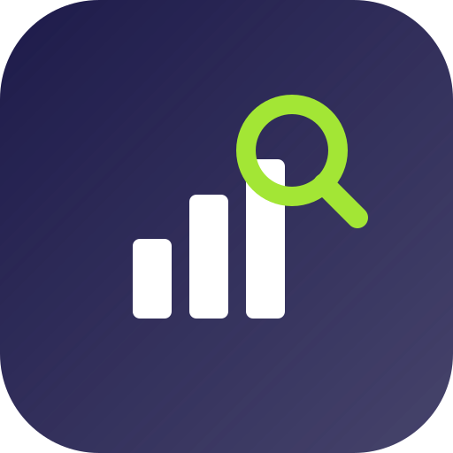

Dados PúblicosTodos os projetos →Os dados oficiais existem, mas estão em portais técnicos e numa linguagem que exige especialista. Transformamos isso em ficha simples, resumo em linguagem clara e comparador — sempre com a fonte à vista.
Abrir o appSlides de defesaPrestação de contas (TSE), atividade parlamentar e Portal da Transparência — nada é inventado.
Cada indicador vira uma frase curta em português do dia a dia, sem adjetivo de valor.
Resumo curto e visual: se não for entendido em segundos, não serve.
Dois agentes, os mesmos indicadores, na mesma escala — e a fonte de cada número.
Orientação: Prof. Pantalião